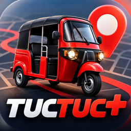

TucTuc+Política de privacidad
Vigente desde el 5 de noviembre de 2026
TucTuc+ es una app de Hajona Labs que conecta a pasajeros con pilotos de tuc tuc en Santa Cruz del Quiché, Guatemala. Aquí explicamos qué datos usamos, para qué y cómo puedes borrarlos.
Datos que usamos
- Cuenta: tu nombre y el correo que te da Apple o Google al entrar, o tu número de celular si entras con él. Los pilotos registran además su número de celular, número de unidad y placa.
- Ubicación: mientras usas la app, para saber dónde recogerte, calcular la tarifa y mostrar los tuc tucs cercanos. La ubicación del piloto se comparte con su pasajero mientras está en línea o en un viaje. No usamos tu ubicación con la app cerrada.
- Viajes: origen, destino, tarifa, fecha, el recorrido del tuc tuc y la calificación. Se guardan en el historial del pasajero y del piloto.
- Lugares guardados: casa y trabajo, si los guardas.
- Notificaciones: un identificador del teléfono para mostrarte el avance del viaje en la pantalla bloqueada.
No pedimos ni guardamos datos de tarjetas: los viajes se pagan en efectivo directamente al piloto.
Para qué los usamos
- Para pedir, aceptar y seguir viajes, y mostrar al pasajero quién lo lleva.
- Para llevar el historial de viajes y el número de viajes y calificación de cada piloto.
- Para seguridad: saber qué piloto hizo cada viaje y atender reclamos.
No vendemos tus datos, no mostramos anuncios y no los usamos para publicidad.
Con quién se comparten
- Entre pasajero y piloto de un viaje: nombre, ubicación y, en el caso del piloto, unidad, placa y número de viajes.
- Servicios que hacen funcionar la app: Supabase (guarda la información), Apple y Google (inicio de sesión, mapas y notificaciones) y el servicio de rutas que dibuja el camino en el mapa. Solo reciben lo necesario para dar ese servicio.
- Autoridades: solo si la ley de Guatemala nos obliga.
Cuánto tiempo se guardan
Tu cuenta se guarda mientras la uses. El historial de viajes es permanente para que pasajeros y pilotos puedan consultarlo y por seguridad; si eliminas tu cuenta, tus viajes quedan sin tu nombre ni tu número.
Eliminar tu cuenta
Desde la app: abre Mi perfil y toca Eliminar mi cuenta.
Sin la app: escríbenos a horsepowergridsupport@gmail.com con el asunto “Eliminar mi cuenta” desde el correo o con el número de tu cuenta. La eliminamos en un máximo de 30 días.
Se borran tu nombre, tu número, tus lugares guardados, el identificador de notificaciones y tu forma de entrar. Los viajes ya hechos se conservan sin tus datos personales.
Menores de edad
TucTuc+ no está dirigida a menores de 13 años y no recogemos sus datos a sabiendas.
Cambios y contacto
Si cambiamos esta política, actualizaremos la fecha de arriba. Para cualquier pregunta escríbenos a horsepowergridsupport@gmail.com.